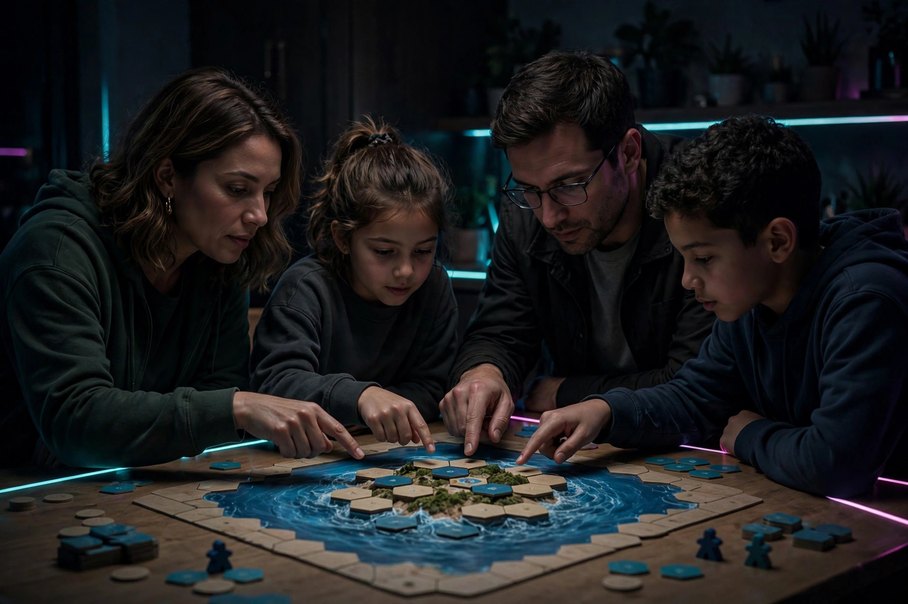

Cooperative board games for families

Most family game nights end the same way: one winner, everyone else mildly annoyed, and the youngest player vowing never to play again. Cooperative games flip that script. The whole table plays against the game itself — a sinking island, a rising sun, a horde of monsters — and either everybody wins or everybody loses. Nobody gets knocked out, nobody spends forty minutes watching, and the post-game argument changes from "you cheated" to "we almost had it." This guide sorts six well-documented cooperative games by the age of your youngest player, because that, more than theme or box art, is what decides whether a co-op night works.
Why cooperative games change the mood at the table
A cooperative game gives the table one shared problem instead of several private ones. That matters most for kids who are still learning to lose. In a competitive game, a seven-year-old's mistake benefits the person sitting next to them; in a cooperative game, the same mistake is a puzzle the whole table gets to solve out loud. The conversation changes, too. Instead of guarding your plans, you narrate them: "If the water rises here, we lose the temple, so somebody has to shore it up this turn." Kids hear strategy spoken plainly, and they get to contribute real moves from the first round — a young player's card counts exactly as much as an adult's.
There is also a pacing benefit. Cooperative games tend to create natural cliffhanger moments — the sun token one space from sunrise, the last treasure one turn away — that pull the whole table's attention in the same direction at the same time. That shared tension, win or lose, is the memory kids actually keep.
The by-age ladder at a glance
Every specification below was checked against publisher or retailer listings on October 13, 2026 — this is a spec-verification exercise, not a memory exercise, because age ratings and player counts drift between editions.
| Game | Players | Ages | Time | Reading needed | Best for |
|---|---|---|---|---|---|
| Hoot Owl Hoot | 2–4 | 4+ | Short first game | None | Preschoolers and first-time players |
| Outfoxed | 2–4 | 5+ | 20–30 min | Minimal | First deduction and clue-sharing |
| Forbidden Island | 2–4 | 10+ | 30 min | Card text | The classic family co-op adventure |
| Castle Panic (2nd ed.) | 1–6 | 8+ | 45 min | Card text | Bigger groups and tower-defense fans |
| Pandemic | 2–4 | 8+ | About 45 min | Card text | Older kids and adults who want a real challenge |
| The Crew: Mission Deep Sea | 3–5 | 10+ | 20 min | Task cards | Card players who like limited communication |
Two dated Canadian price checks from the same day: Castle Panic Second Edition was listed at CA$44.99 at Arctic Board Games (shown out of stock when checked), and The Crew: Mission Deep Sea was listed at CA$19.99 in stock at the same retailer. Prices move; treat those as a snapshot of October 13, 2026, not a promise.
Ages 4–6: no reading, shared cheering
Hoot Owl Hoot, from Peaceable Kingdom, is the gentlest starting point on the ladder. Players work together to get all the owls back to their nest before the sun rises. On a turn, a player plays a color card and moves any owl to the next space of that color; drawing a sun card instead advances the sun token one step toward morning. There is no reading at all — colors do all the work — which means a four-year-old plays the real game, not a supervised version of it. The box includes six owl tokens, and the difficulty adjusts simply by changing how many owls start in play: fewer owls for a first game, more owls as the table gets confident. CoopBoardGames' skill guide maps this game to practicing turn-taking and shared decision-making, which is exactly what a first game night should practice.
Ages 5–8: first deduction
Outfoxed, from Gamewright, adds reasoning to the teamwork. A fox has made off with a prized pot pie, and the table of detectives moves around the board gathering clues, then uses an evidence scanner to rule suspects in or out based on what the guilty fox is wearing. The race matters: solve the case before the fox reaches the exit and escapes. It plays in about 20–30 minutes for 2–4 players aged 5 and up, and it teaches a genuinely useful habit — saying your reasoning out loud so teammates can build on it. Because the deduction is shared, a child who spots the decisive clue gets the full detective moment, and a wrong guess costs the team time rather than costing one player the game.
Ages 8 and up: real strategy, shared stakes
Forbidden Island (Gamewright, designed by Matt Leacock) is the step-up adventure: 2–4 players, ages 10 and up on the box, about 30 minutes. The team lands on an island, races to capture four sacred treasures, and then has to escape together before the island sinks beneath them — tiles flood and disappear as the water level rises, so the board itself is the countdown clock. Multiple difficulty levels let the same box serve a first play and a tenth play very differently.
Castle Panic (Fireside Games) suits bigger tables: the second edition plays 1–6 players, ages 8 and up, in about 45 minutes. It is a cooperative tower defense — monsters advance from the forest at the board's edge toward the castle in the center, and players trade cards, coordinate hits, and rebuild to keep the towers standing. Win or lose together, though the player who slays the most monsters earns the Master Slayer title, a light competitive ribbon on a cooperative core that older kids tend to love.
Pandemic (Z-Man Games) is the heavyweight. First published in 2007, it puts 2–4 players (box age 8 and up, about 45 minutes) on a disease-fighting team treating infections around the world while collecting the cards needed to discover cures. It is the game on this ladder most likely to beat your family the first two times you play it — and that is precisely why beating it feels like an achievement the whole table earned.
The Crew: Mission Deep Sea (Kosmos) takes a different route: it is a cooperative trick-taking card game for ages 10 and up that runs about 20 minutes a mission. The crew is searching for the lost continent of Mu, and success depends on winning the right tricks in the right order — while communication between players is deliberately limited. That single design choice leads straight to the biggest problem in cooperative play.
The quarterback problem — and the fix
Quarterbacking is what happens when the most experienced player stops advising and starts directing: every turn becomes their turn, and everyone else becomes a pair of hands. It is the number-one way cooperative games quietly stop being fun for kids, and listicles almost never mention it. Use this decision framework before and during play:
- The hand belongs to the player. Advice is welcome; instructions are not. The player whose turn it is makes the final call, even when the table can see a better move. The cost of one suboptimal turn is small; the cost of a child feeling like a spectator is the whole evening.
- Rotate the narrator. Each round, a different player reads the situation out loud — what changed, what is urgent, what can wait. Rotating the summary spreads the strategic thinking around the table instead of concentrating it in one head.
- Choose games that limit table talk by design. The Crew's restricted communication makes quarterbacking structurally impossible: nobody can direct a hand they cannot see discussed openly. If your table has a strong quarterback, a limited-communication game is a better purchase than another open-discussion game plus a house rule everyone forgets.
- Let losses land. A lost game with real decisions teaches more than a won game on rails. Debrief one moment afterward — "the turn the island tile flipped was the moment" — and play again.
Difficulty dials that grow with your kids
The best family co-ops are not one difficulty in a box. Hoot Owl Hoot scales by owl count. Forbidden Island ships with multiple difficulty levels. Castle Panic asks the table to survive all of its monsters with at least the castle standing, and its modes let a group lean more cooperative or more competitive. The Crew replaces a single win condition with a ladder of missions. When comparing two games, compare the dial, not just the box age: a game that can get harder on purpose will still be on your shelf in three years, while a game at one fixed difficulty gets outgrown by spring.
FAQ
What is the best first cooperative game for a 5-year-old? Start at the bottom of the ladder: Hoot Owl Hoot if the child is closer to 4 and not reading yet, Outfoxed at 5 and up if they enjoy mysteries. Both finish fast and neither eliminates a player.
Are cooperative games good for a sore loser? They remove the specific sting of losing to a sibling or parent — the game wins, not a person — while still letting a child practice the feeling of a plan failing. That is a gentler place to build the skill.
How long do these games actually take? From the verified specs: Outfoxed and The Crew run about 20–30 and 20 minutes, Forbidden Island about 30, Castle Panic and Pandemic about 45. Add ten minutes for the first teach of any of them.